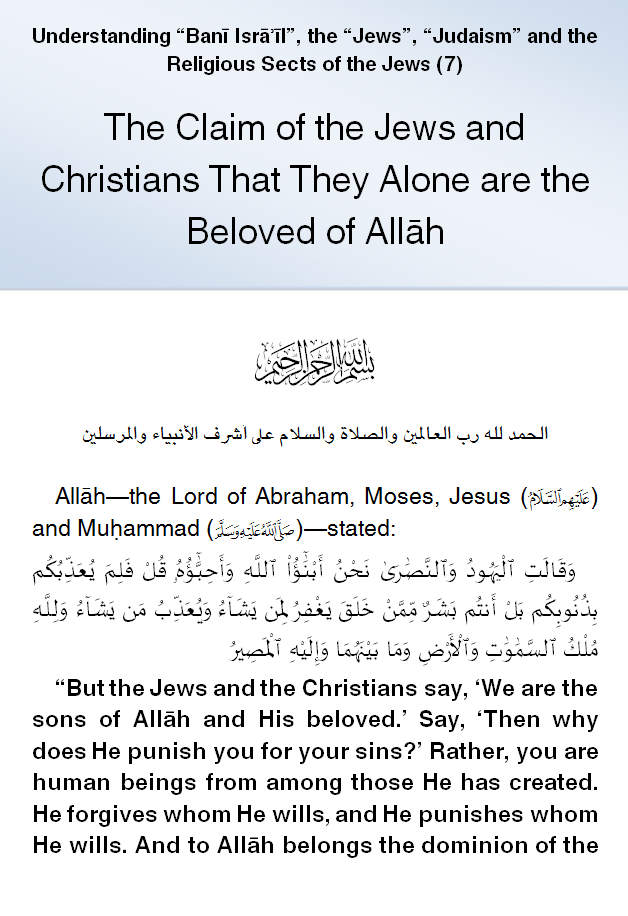
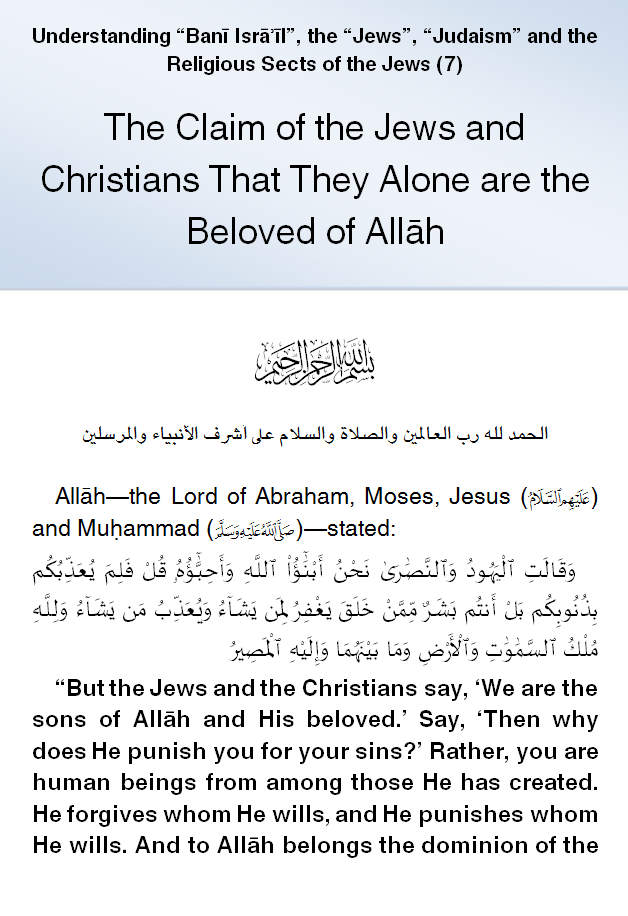

IslamMoses.Com
Posted by Abu Iyaad on Monday, September, 24 2018 and filed under General
Key topics: Jews • Christians • Chosen People • Sons Of God

|
IslamMoses.Com |
|
The Claim of the Jews and Christians That They Alone Are the Beloved of Allāh Posted by Abu Iyaad on Monday, September, 24 2018 and filed under General Key topics: Jews • Christians • Chosen People • Sons Of God 
|